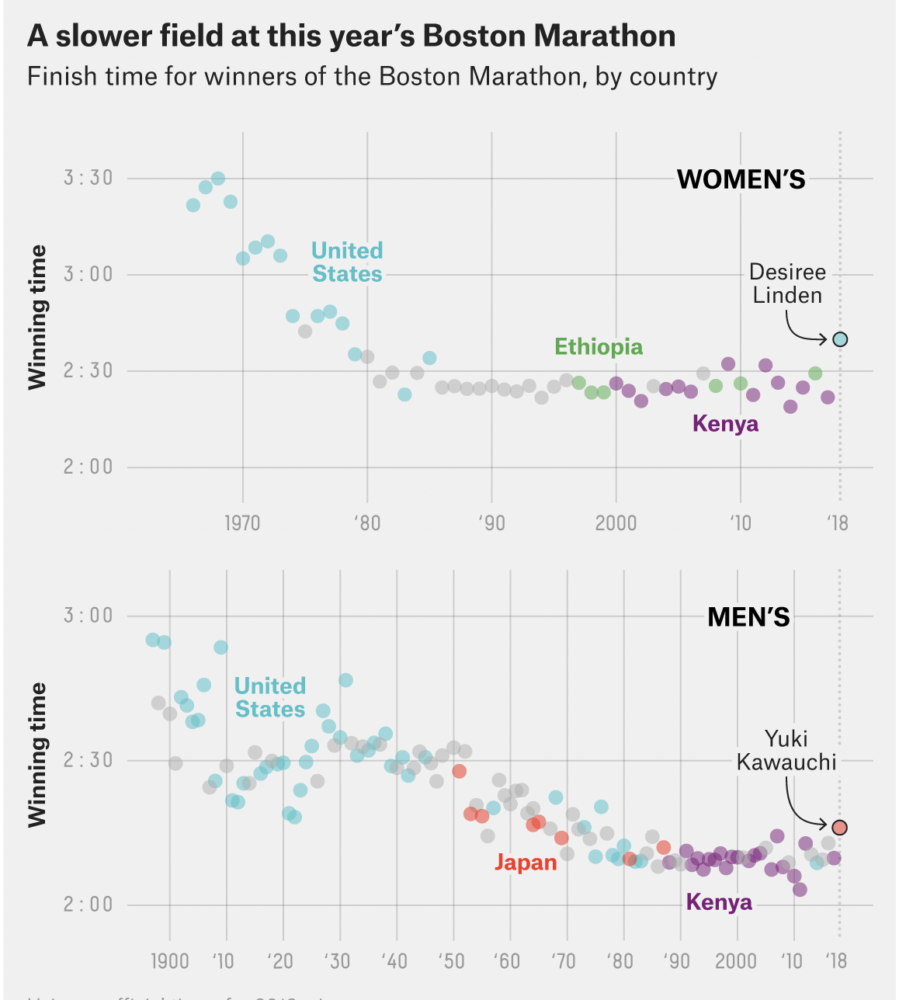
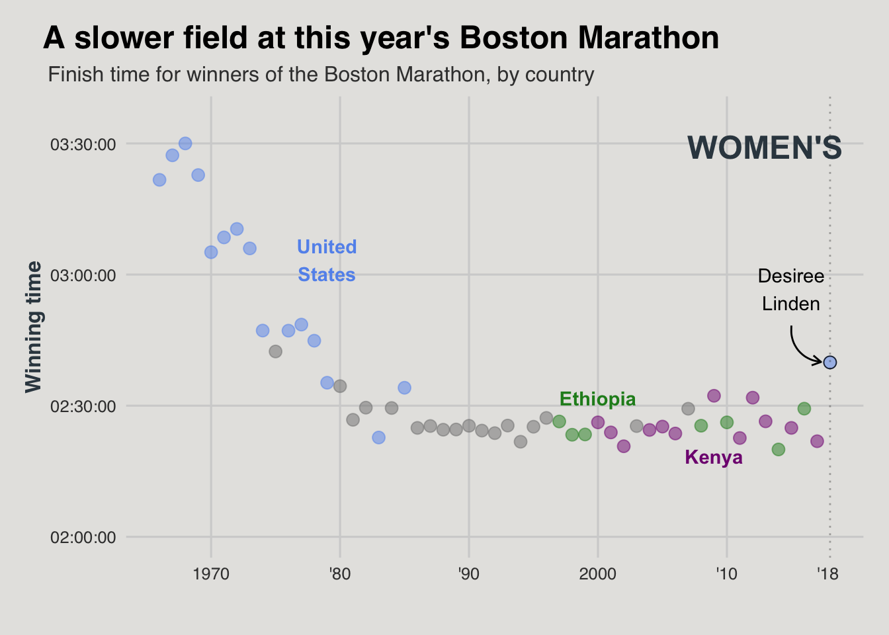
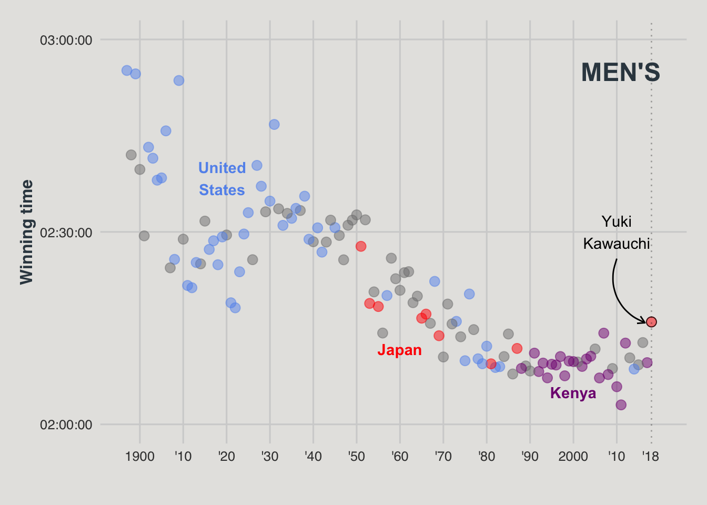
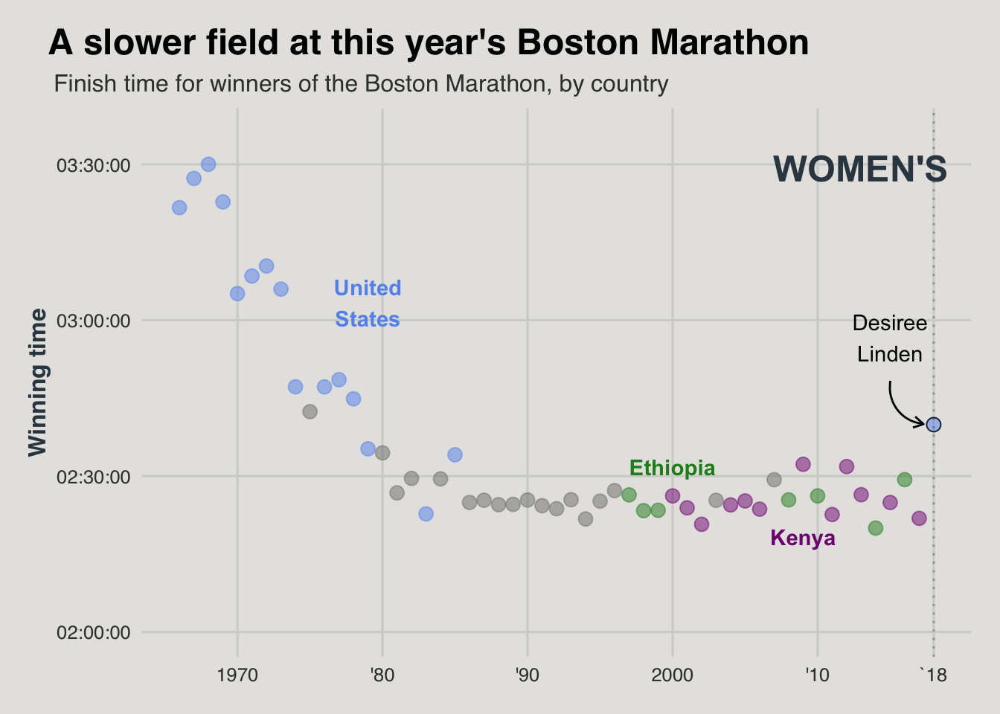

library(tidyverse)
library(here)
library(scales)
library(ggthemes) #To get plot themes
library(ggpubr)
library(patchwork) #To stack plots Visualization Exercise
Data Description
The plot that I am reproducing can be found on the fiverthirtyeight article “This year’s Boston Marathon was Slooooowww” from 2018. By graphing winning times from previous marathon’s by country, the plot shows that the winners (both men and women) had slower times in 2018 as compared to previous years. The dataset used can be found on the Boston Athletic Association website. The datasets (2) contain country, time, name, and year for both men and women respectively. Here is the original plot that I will be replicating:

Libraries
Load datasets for men and women times
men<- read_csv(here("data","men_times.csv")) #Men's race times
women<- read_csv(here("data", "women_times.csv")) #Women's race times Data Altering
Make new column that singles out the three main countries of interest for men and women
Here, I created a new column that highlighted the primary countries for men and women. Using case_when(), if the country said: Japan (men), Ethiopia (women), United States, or Kenya, the new column repeated that name. Any other country was put in an Other category.
men2<- men %>%
mutate(time2 = as.numeric(men$time)) %>%
mutate(country2 = case_when(country == "Kenya"~"Kenya",
country == "United States"~ "United States",
country == "Japan"~"Japan"))%>%
filter(year %in% "1897":"2018")
women2<- women %>%
mutate(time2 = as.numeric(women$time)) %>%
mutate(country2 = case_when(country == "Kenya"~"Kenya",
country == "United States"~ "United States",
country == "Ethiopia"~"Ethiopia")) %>%
filter(year %in% "1966":"2018")
men_18<- men %>% #Single point of interest (2018)
filter(year %in% 2018)
women_18<- women %>% #Single point of interest (2018)
filter(year %in% 2018)Create lists for x axis
The figure displays the x axis in years as both 4 digits and 2 digits with a “`”. Here I manually create lists that will be used as axis labels downstream.
men_years<- c("1900", "'10", "'20", "'30", "'40", "'50", "'60", "'70", "'80", "'90", "2000", "'10")
women_years <- c("1970","'80", "'90", "2000", "'10" )Plotting
Plot Women
#Basic plotting
wom<- women2 %>% ggplot() +geom_point(
aes(x= year,
y = time,
color= country2),
alpha =0.5,
size = 3)+
theme_fivethirtyeight()+ #Theme is specific to their website
#Working with axis scales
scale_x_continuous(breaks = seq(1970,2018,10), #Breaks will go from 1970-2018 by 10 years
limits = c(1966,2018), #Limits set from 1966-2018
labels = women_years) + #Here is that manual list for the x axis labels
scale_y_time(breaks = date_breaks("30 mins"),
limits = c("7200", "12960"))+ #times are in seconds
geom_vline(xintercept = 2018,alpha=0.3, #Adds dashed line to 2018
linetype = "dotted")+
#Add Labels/Arrows to Plot
annotate("text", x = 2013, y =12555, label = "WOMEN'S", color = "#36454F", fontface=2, size = 6.4)+
annotate("text", x = 2009, y =8300, label = "Kenya", color = "#800080", fontface =2) +
annotate("text", x = 1979, y =11000, label = "United\nStates", color = "#6495ED", fontface = 2)+
annotate("text", x = 2000, y =9100, label = "Ethiopia", color = "#228B22", fontface = 2)+
annotate("text", x = 2015, y =10600, label = "Desiree\nLinden")+
annotate( geom = "curve", x = 2015, y = 10100, xend = 2017.3, yend = 9600,
curvature = .45, arrow = arrow(length = unit(2, "mm")))+
#Assign Colors by Country. Hex codes were Googled.
scale_color_manual(values = c("Ethiopia" = "#228B22",
"United States" = "#6495ED",
"Kenya" = "#800080"))+
#Labels
labs(y = "Winning time",
title = "A slower field at this year's Boston Marathon",
subtitle = "Finish time for winners of the Boston Marathon, by country",
caption ="'18")+ #This was the only way I could think of adding 2018 the axis that had breaks of 10 years otherwise.
#Work with Plot colors, fonts, and Label Positions
theme(legend.position = "none",
panel.background = element_rect("#E5E4E2"),
plot.background = element_rect("#E5E4E2"),
plot.title = element_text(color = "black",
hjust = -1.4),
plot.subtitle = element_text(hjust = -.41),
axis.title.y = element_text(color = "#36454F",
face= "bold"),
plot.caption = element_text(hjust = 0.96555, vjust = 8.1)) +
#Create new plot to overlay with point of interest (2018)
geom_point(data=women_18,
aes(x = year, y= time),
pch = 21, color ="black", #Outline point
size = 3,
alpha = 0.8)
wom
Plot Men
#Basic Plotting
mn<- men2 %>% ggplot() +geom_point(
aes(x= year,
y = time,
color= country2),
alpha = 0.5,
size = 3)+
theme_fivethirtyeight()+
#Working with axis scales
scale_x_continuous(breaks = seq(1900,2018,10), #Breaks go from 1900-2018 by 10 years
limits = c(1897,2020), #Limits set from 1897-2020
labels = men_years) + #Using list from above for x axis labels
scale_y_time(breaks = date_breaks("30 mins"),
limits = c("7200", "10800"))+ #Time in seconds
geom_vline(xintercept = 2018,
alpha=0.3,
linetype = "dotted") +
#Add Labels/Arrows to Plot
annotate("text", x = 2011, y =10500, label = "MEN'S", color = "#36454F", fontface=2, size = 6.4)+
annotate("text", x = 2000, y =7500, label = "Kenya", color = "#800080", fontface=2) +
annotate("text", x = 1919, y =9500, label = "United\nStates", color = "#6495ED", fontface=2)+
annotate("text", x = 1960, y =7900, label = "Japan", color = "red", fontface =2)+
annotate("text", x = 2010, y =9000, label = "Yuki\nKawauchi")+
annotate( geom = "curve", x = 2010, y = 8750, xend = 2016.5, yend = 8150,
curvature = .45, arrow = arrow(length = unit(2, "mm")))+
#Working with Labels, etc
labs(y = "Winning time",
caption = "'18")+
theme(legend.position = "none",
panel.background = element_rect("#E5E4E2"),
plot.background = element_rect("#E5E4E2"),
axis.title.y = element_text(color = "#36454F",
face = "bold"),
plot.caption = element_text(hjust = 0.952, vjust = 8.1)) +
#Assign Colors by Country
scale_color_manual(values = c("Japan" = "red",
"United States" = "#6495ED",
"Kenya" = "#800080"))+
#Overlay Plot with point of interest (2018)
geom_point(data=men_18,
aes(x = year, y= time),
pch = 21, color ="black",
alpha = 0.8,
size = 3)
mn
Final Plot
Here I used ggarrange() to stack the plots on top of one another.
figure<- ggarrange(wom, mn + font("x.text", size = 10),
ncol = 1, nrow = 2) #Final plot is 1 column and 2 rows
figure
Pretty close! A few things that I struggled with were getting the y axis tick labels to be displayed as “2:00:00” as opposed to “02:00:00”. I also could not get the dashed lines for `18 to line up for both graphs without skewing everything else.
Save as PNG
png(file = here("results","plots", "marathon.png"))
figure
dev.off()quartz_off_screen
2